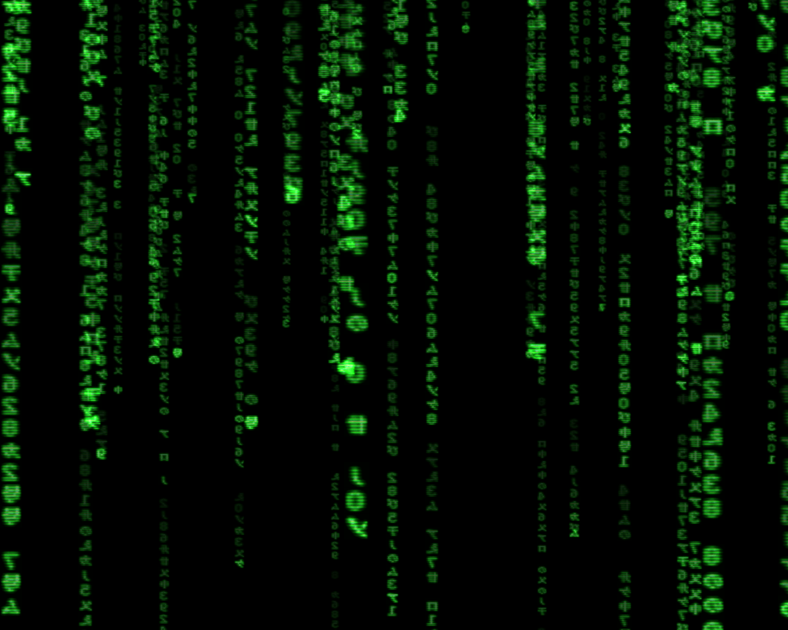

The Matrix
The Matrix (titulada Matrix en español) es una película de ciencia ficción escrita y dirigida por las hermanas Wachowski y protagonizada por Keanu Reeves, Laurence Fishburne, Carrie-Anne Moss y Hugo Weaving. Estrenada en los Estados Unidos el 31 de marzo de 1999. Es la primera entrega de la trilogía de Matrix de la que derivan (dado su éxito) una serie de videojuegos, cortos animados y cómics.
La película fue reconocida por la Academia con 4 Premios Óscar (Mejor Montaje, Mejor Sonido, Mejor Edición de Sonido y Mejores Efectos Visuales).
Si bien se ha vuelto una película de culto, y en su argumento se establecen paralelismos con conceptos religiosos, filosóficos e ideológicos; marcó un antes y un después en los efectos visuales de la época. De entre los que se destaca el «tiempo bala» (bullet time), técnica que consiste en aparentar que se congela la acción mientras la cámara sigue moviéndose alrededor de la escena. El efecto visual se consigue utilizando múltiples cámaras que graban la acción desde distintas posiciones a una cantidad elevada de fotogramas por segundo, posteriormente se intercalan los fotogramas de cada una de las cámaras. Aunque es un efecto muy revolucionario no fue la primera vez que hacía su aparición en el cine (anteriormente fue usado en películas como Jumanji, entre otras), pero fue con este film innovador cuando surgió un gran interés por este efecto, posteriormente utilizado en varias películas.